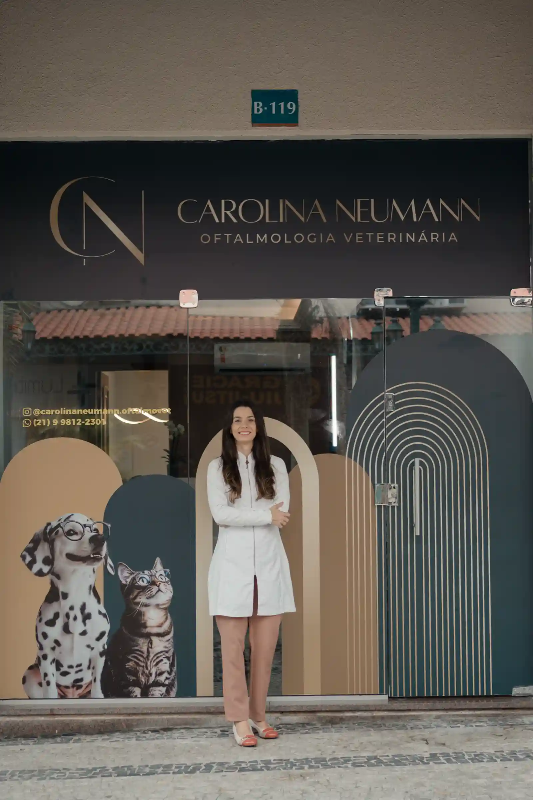
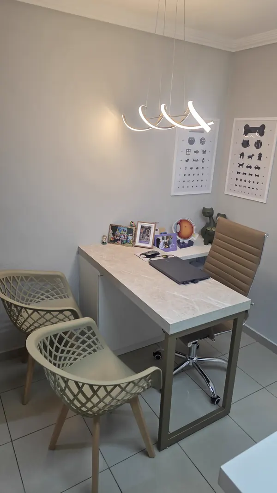
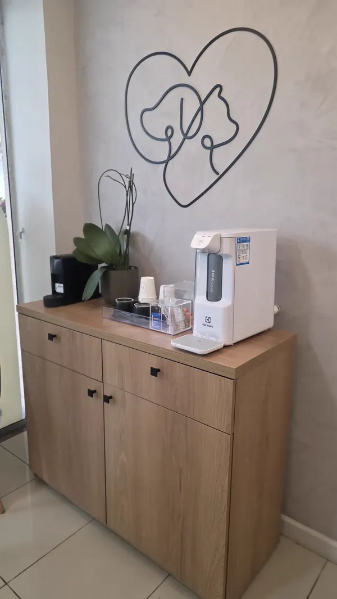
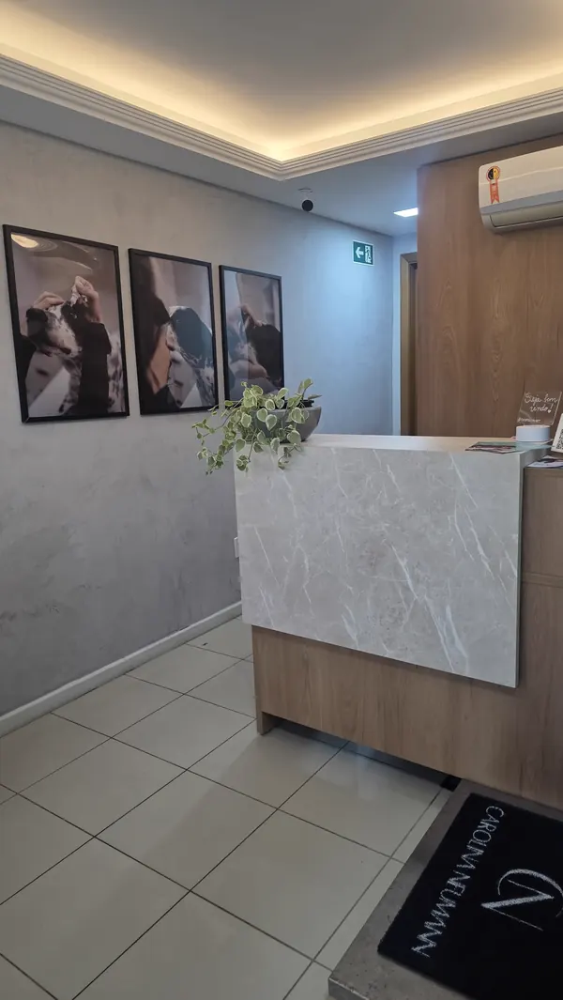
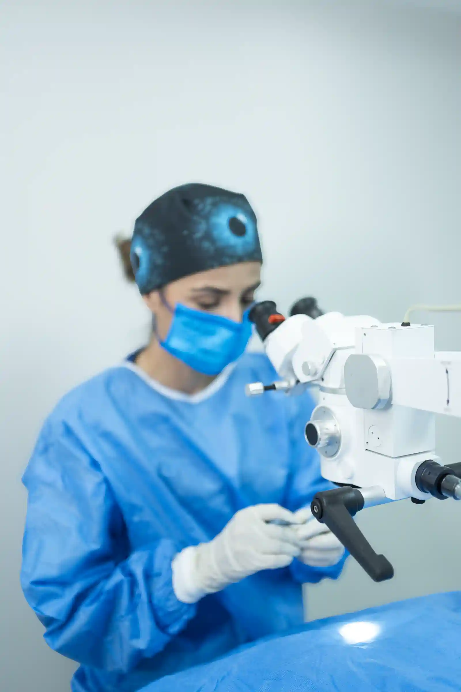
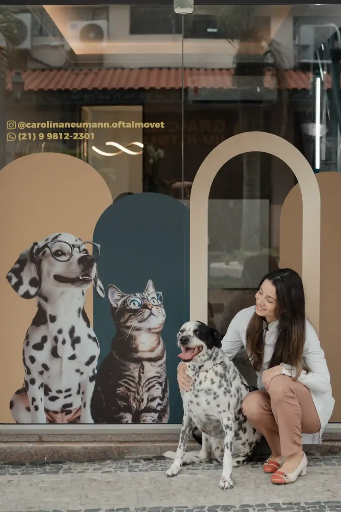

Atendimento dedicado à saúde ocular do seu pet
Nossa equipe está preparada para oferecer um atendimento cuidadoso, sempre com responsabilidade, atenção e foco na saúde ocular e no bem-estar do seu melhor amigo.

Atendimento especializado em oftalmologia veterinária com diagnóstico preciso e estrutura completa para cuidar da visão do seu pet.

Nossa equipe está preparada para oferecer um atendimento cuidadoso, sempre com responsabilidade, atenção e foco na saúde ocular e no bem-estar do seu melhor amigo.
Veja o que tutores falam sobre a experiência no consultório da Dra. Carolina

"Excelente atendimento! A Dra. Carolina cuidou do meu nenén Luck com muito carinho e profissionalismo. Só tenho a agradecer pelo cuidado e dedicação."

"Chamei a Dra. Carolina em casa, pois meu gatinho estava com o olho vermelho. Descobrimos que era uma úlcera e, graças a Deus, tratamos a tempo! Eu e o Bolinha agradecemos muito!"

"Levei meu cachorro para a Dra. Carolina e fomos muito bem atendidos. Ela é atenciosa, explica tudo de forma clara e cuidadosa. Além disso, o consultório é impecável e muito bem cuidado."

"Gostaria de parabenizar a Dra. Carolina pelo excelente trabalho na área de oftalmologia veterinária. Sua dedicação, competência e carinho com os animais são notáveis. Minha cachorrinha chegou com uma úlcera de córnea e, graças ao tratamento, hoje está ótima."
Paolla Oliveira
Atriz e fisioterapeuta
Ambiente organizado, equipamentos modernos e profissionais capacitados para oferecer um atendimento de excelência.




Analisamos os sinais apresentados e realizamos uma análise completa para entender a condição ocular do seu pet.
Utilizamos equipamentos apropriados para uma avaliação precisa da saúde ocular.
Explicamos de forma simples o que está acontecendo e quais são as melhores opções de tratamento.
Indicamos o tratamento adequado e acompanhamos a evolução do quadro quando necessário.

Com atuação dedicada à saúde ocular veterinária, a Dra. Carolina trabalha com avaliação criteriosa, diagnóstico detalhado e acompanhamento responsável, proporcionando segurança e clareza para tutores e pets.
Reunimos abaixo as perguntas mais comuns de tutores que chegam até nós preocupados com a visão de seus pets.
Não, o atendimento oftalmológico é indolor. Utilizamos técnicas cuidadosas e, quando necessário, colírios anestésicos para garantir o conforto do seu pet durante toda a consulta.
O oftalmologista veterinário possui equipamentos específicos e conhecimento especializado para diagnosticar e tratar condições oculares que podem passar despercebidas em uma consulta geral. Um diagnóstico precoce pode evitar complicações graves.
O valor da consulta pode variar de acordo com a necessidade de exames complementares. Entre em contato pelo WhatsApp para obter informações detalhadas sobre valores e formas de pagamento.
A duração do tratamento depende da condição diagnosticada. Algumas situações se resolvem em poucos dias com colírios, enquanto outras podem necessitar de acompanhamento mais prolongado. Sempre explicamos o plano de tratamento de forma clara.
Sim! Atendemos cães, gatos e outros animais de estimação. Cada espécie recebe um atendimento personalizado de acordo com suas características e necessidades específicas.
É muito simples! Basta clicar no botão de WhatsApp disponível nesta página e enviar uma mensagem. Nossa equipe irá responder rapidamente para agendar o melhor horário para você e seu pet.
Especializada em Oftalmologia Veterinária
